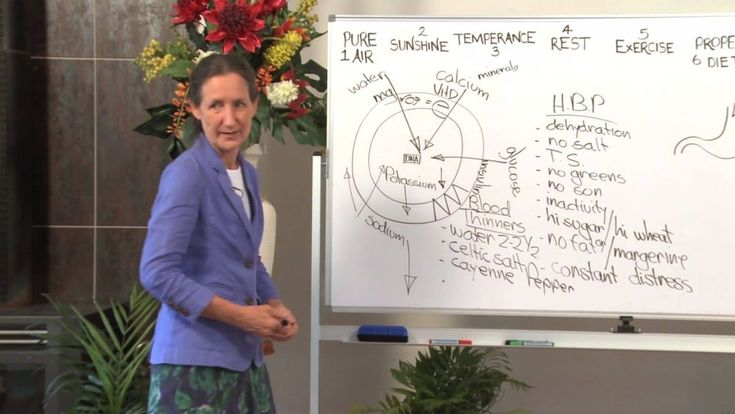

Keep in mind a simple truth and listen to nobody: joint diseases are treatable even at an old age
This doctor claims that she can cure osteochondrosis which developed during 18 years in a couple of months. That she can cure a very old woman suffering from the most severe case of arthritis in 78 days. As for the joint pains, if treated properly, they will go within 4 days! During 30 years of her practice, she keeps confirming each of her statements by showing how it works in action. Immediately after live broadcast on the chanel 'MSNBC' (the program on the topic 'how to keep your joints healthy at any age') a well-known doctor Barbara O'Niell agreed to give us an interview.
Journalist: How do you do, Dr. O'Neill, Tell me, is the following statement true, that joint diseases and osteochondrosis are inevitable for mature people?
"Dr. Barbara O’Neill: Hello, Susan. Of course, it is not true. Excessive trust in
doctors who strive to cure you for 10 years but never succeed in doing so, that is inevitable for
mature people. As a matter of fact, joints, chondrosis and the entire skeletal system can be very
well treated at any age. And this is not a miracle but just pure science.
If you know the secret and put a bit of efforts in terms of self-discipline, you can cure the disease at home very fast, thousands of my patients do that."
Journalist: And what is the secret?
Dr. Barbara O’Neill: The secret is in understanding why you have pain. Overall there are up to 147 different possible reasons for the development of osteochondrosis and arthrosis listed in medical encyclopedias, but the consequence is one and the same - joints, vertebra and cartilage lose their elasticity, hence the pain. They are worn out because of poor blood circulation.
That's the whole secret, we cure the joint by restoring its blood supply.
Journalist: Can you explain how joint diseases impact a person's life? Unlike injuries which are often temporary, how do chronic joint conditions affect individuals?
Dr. Barbara O’Neill: Certainly. Joint diseases such as osteoarthritis, rheumatoid arthritis, and gout can have profound effects on an individual's quality of life. Let's start with some of the primary complications and their consequences:
OSTEOARTHRITIS
Consequences: Severe pain during movement, loss of joint function, and reduced mobility. This can lead to a dependency on painkillers and decreased participation in daily activities.
RHEUMATOID ARTHRITIS
Consequences: Chronic inflammation and pain, significant swelling, and deformities in the joints. Over time, this can cause irreversible joint damage and severe disability.
GOUT
Consequences: Acute and intense joint pain, often starting in the big toe, along with swelling and redness. Repeated attacks can lead to joint erosion and chronic pain.
Journalist: But isn't it generally conceded that it is almost impossible to restore blood circulation after the age of 45?
Dr. Barbara O’Neill: This is complete nonsense. I got myself out of a wheelchair after an injury, and this was more serious that just turning 45.
Journalist: Have you saved others from a wheelchair?
"Dr. Barbara O’Neill: Yes, and more than once. But most of my patients are
ordinary people over 40 who developed these diseases as they grew older. They come to me with
similar problems: osteochondrosis, arthrosis, radiculitis, pinched nerve. These diseases exhaust you
and don't let you live normally.
People complain of pain, it's hard even to walk. They are just regular citizens, not sporstmen and not disabled. They cry 'Why me? What have I done?' I reply plainly 'let's stop whining and start restoring blood circulation'."
Journalist: How do you restore blood circulation at this age?
Dr. Barbara O’Neill: Until recently I treated my patients with the help of a
complex movement program consisting of 96 exercises which involved trainers. This is an exteremely
effective method, but very long and hard.
It hurts, it is difficult, people don't have time to hit the gym. I believed that there exists an easier and more modern method and I've found it.
Journalist: How very interesting! Will you tell our readers about it?
Dr. Barbara O’Neill: Sure. Our centre was the first one in US to get a certified access to a brand-new remedy for osteochondrosis and joint pain. I have to admit, when I first learnt about it I just laughed because I didn't believe in its effectiveness. But I was amazed by the results of our tests - 4567 of patients completely got rid of their condition, and that is more than 94% of all subjects. 5.6 felt a significant improvement, and only 0.4% didn't notice any changes.
Journalist: What kind of remedy is it?
Dr. Barbara O’Neill: I'm talking about a unique remedy Joint`s Optimizer. This
Joint`s Optimizer makes it possible to forget about back and joint pain virtually in no time, no
more than 4 days, and cure even the most neglected cases in a couple of months.
More than 1.3 million dollars was spent on the development of its formula and almost 13 million dollars were paid for the right to distribute this product across the country.
Journalist: So does that mean that Joint`s Optimizer can be bought only in US?
Dr. Barbara O’Neill: At the moment, yes. But starting from the next year, it will be weidly available.
Journalist: How does this miraculous Joint`s Optimizer work?
Dr. Barbara O’Neill: There's no miracle, only pure science. The Joint`s Optimizer
consists of 32 powerful components which make weakened old cells function 7 times faster when they
get into contact with them, thus the cells gradually rejuvenate.
Just by one gum a day , you will activate more than 930000 cells which will be of good service to your blood flow. This is how this treatment goes. The main thing here is stability.
Journalist: Sounds impressive. But we need another explanation, what would it mean for people with ordinary diseases?
Dr. Barbara O’Neill: This means that medieval American medicine is finally
becoming a thing of the past and you can cure your diseases at home within 1-2 months. The Joint`s
Optimizer has no freezing or anaesthetizing effects, it 'relaunches' the body on a cellular level.
It removes the underlying cause of pains and puts joints and spine back in their initial, normal
state. A patient not just gets rid of symptoms, but also eliminates the core of the disease -
weakened blood flow caused by slow dying cells.
On the very first day the Joint`s Optimizer triggers the functioning of the body regenerative systems. It also relieves pain syndrome, which you will feel at once. In 2-3 weeks the treatment will be finished, but keep in mind that you should repeat the course eventually in order to prevent relapse.
Journalist: Does the Joint`s Optimizer help to cure arthrosis and osteochondrosis exclusively?
Dr. Barbara O’Neill: No, that's what I'm trying to make you understand: it acts
on a cellular level, restoring your blood flow. It cures any kind of disease related to joints and
spine:
arthrosis and arthritis, sciatica, rheumatism, radiculitis, herniated vertebra. Injuries, traumas, bruises, fractures, even calloses - the Joint`s Optimizer is highly effective in all these cases.
Journalist: This seems like a very curious remedy. Does it really eliminate all these diseases, not just relieve the pain?
Dr. Barbara O’Neill: The Joint`s Optimizer alleviates pain (at early stages of the treatment) and eventually completely eliminates the disease. Don't get me wrong, I like exercises and sport and I'm not going to quit it, but for most of my patients this gel is the easiest, most effective and available method of treatment.
Journalist: I guess many would like to know where can they get it?
Dr. Barbara O’Neill: We wanted to begin selling it in the pharmacies,
but we don't seem to come to terms with pharmacists, because the Joint`s Optimizer can spoil their
business. People keep buying their medications for years, and there are more and more of those in
need of treatment - that's the actual state of affairs that suits
pharmacists.
So now we sell it exclusively on the official site.
There are some benefits though - we sell directly, without middlemen, which gives us the chance to lower the price making it 4,7 cheaper than retail price.
Shipping is conducted by mail, this is home treatment so you won't be needing a specialist's observation. However, you shouldn't take my word for it. Try remedies produced by other manufacturers if you want to compare. But I'm sure that you won't find anything even remotely similar to Motion Energy in terms of its effectiveness.
Journalist: Thank you, doctor, for the interview! Is there anything you would like to add for our readers before we finish?
Dr. Barbara O’Neill: Yes! Yes of course. I would like to call to our readers
attention that back and joints diseases get 'younger', i.e. not only old people have it now. Even
mild regular pains is the sign which you must not ignore. Your doctor is not going to persuade you
to get
treated.
And remember: the diseases triggered by joint and spine pains don't only bring discomfort. They also shorten your lifespan by 10-15 years.
P.S.: The doctor decided to give Joint`s Optimizer to the first 50 buyers at a discount price! Go to the official site and maybe you will get lucky!
Avoid fakes!! The original Joint`s Optimizer can only be purchased from the official website
(PROMOTIONAL PRICING FOR A LIMITED TIME ONLY - CLAIM YOURS NOW BEFORE THEY'RE ALL GONE)
EDITOR’S NOTE: For a limited time, the Official Suppliers of Joint`s Optimizer have agreed to offer a 40% OFF Sale